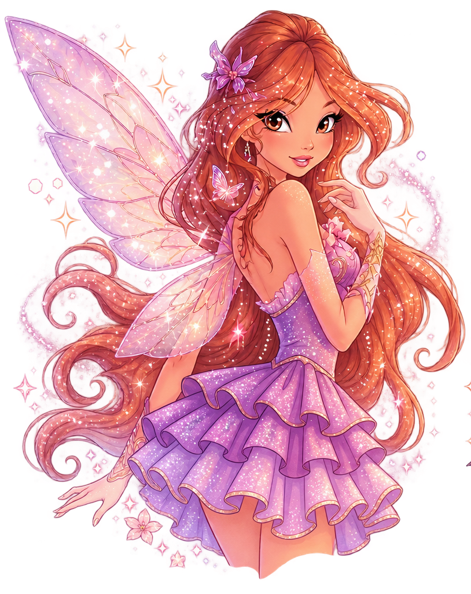

Hola, soy
Ornella Hanauer
Artista e ilustradora
Me encanta dibujar personajes, crear historias y compartir mis ilustraciones, bocetos y proyectos creativos.
Ver galería ContactarmeGalería
Algunas de mis ilustraciones favoritas.


Sobre mí
Soy Ornella, una apasionada por el dibujo y la ilustración desde que era pequeña.
Me inspiran los mundos fantásticos, distópicos, las historias mágicas y la creación de personajes únicos.
Conocer más sobre miSketchbook
Da una pequeña mirada a mis bocetos, estudios y procesos creativos.